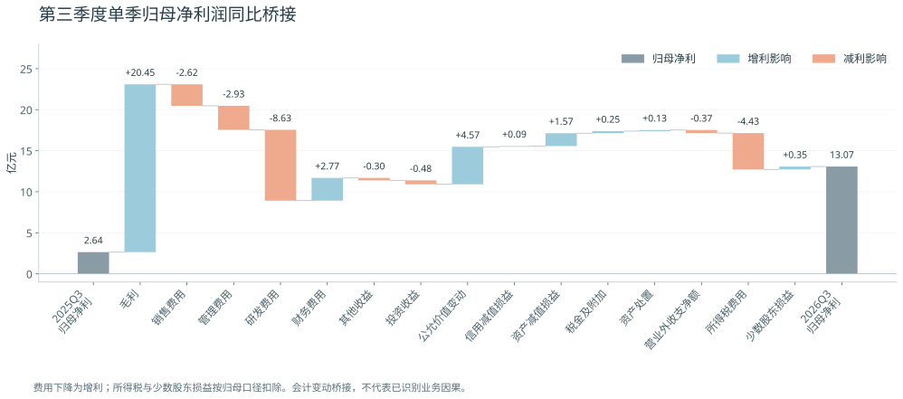
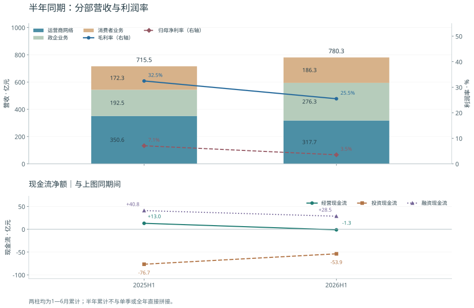

中兴通讯：2026年三季报的营收与利润质量
截至2026年10月27日。金额除说明外为人民币亿元。研究对象为中兴通讯股份有限公司，A股000063、H股00763。2026年三季报未经审计。本页依据官方披露进行提取和计算；独立复核范围在底部单列，数据库观测不据此自动升级为verified。
当前判断
收入增长加速，三季度扣非已扭亏；但毛利率、存货和全年累计现金转化仍承压。6.91亿元不是一笔已披露具体标的的“资产升值”，而是金融资产及负债公允价值变动与处置损益的合计。
三季度归母利润13.07亿元，其中扣非5.93亿元、非经常损益净额7.15亿元。非经常损益占当季利润54.65%，说明利润水平仍较依赖非经营项目；但与去年同期相比，净利润增加10.43亿元，其中扣非改善8.18亿元、非经常损益净增加2.25亿元。利润存量依赖非经常项目，与利润增量主要来自扣非改善，两者同时成立。 2026三季报§2及财务报表 ↗ · 2025三季报§2 ↗
利润桥接、营收结构与现金流
瀑布图从去年同期归母净利接到今年；营收按法定三分部堆叠，毛利率与归母净利率使用右轴。下方现金流与营收图同期间。

蓝色为增利、橙色为减利，标签是对归母利润的影响。费用下降计增利；所得税及少数股东损益均已纳入，不能再重复加减扣非调整。三季报原表第11—12页 ↗
2025H1与2026H1均为1—6月累计；三分部均为披露实际值，包含该分部租金收入。

利润率折线为全公司口径，不代表分部利润率。现金流为净额，投资净流出包含资金产品配置，不能全称资本开支。来源：2026半年报 ↗、2025年报 ↗、2023年报 ↗、2022年报 ↗。质保成本分类说明（2025三季报第2页） ↗。瀑布精确数据CSV ↓ · 营收及现金流CSV ↓
营收质量：看毛利和现金，不能只看算力占比
| 指标 | 2026Q3 | 2025Q3 | 2026年前三季 | 2025年前三季 |
|---|---|---|---|---|
| 营业收入 | 388.13 | 289.67 | 1,168.38 | 1,005.20 |
| 毛利额，收入减成本 | 95.34 | 74.89 | 294.18 | 307.08 |
| 毛利率，计算值 | 24.56% | 25.85% | 25.18% | 30.55% |
| 归母净利润 | 13.07 | 2.64 | 40.60 | 53.22 |
| 扣非归母净利润 | 5.93 | -2.25 | 28.14 | 38.79 |
| 经营现金流净额 | 8.42 | 4.78 | 7.15 | 17.77 |
来源：2026三季报合并利润表、现金流量表，英文PDF第11–13页 ↗，2025三季报§2 ↗。毛利为派生值，不是公司单独披露的利润指标。
收入Q3同比增长33.99%，毛利额增长27.31%，尚未同步；累计收入增长16.23%，毛利额反而下降4.20%，毛利率下降5.37个百分点。Q3毛利率也低于本年上半年的25.48%，因此不能把“利润同比大增”解读为毛利率已经反转。
公司新闻稿称前三季算力收入占比38%、同比增长超过70%，服务器及存储增长超过70%、数据中心产品增长近130%，国际收入增长超过30%。这是公司经营披露，算力分类不是法定报表中的独立分部，不能与运营商/政企分部直接相加，也不能把38%全当成AI服务器。 公司2026年10月26日说明 ↗
半年报提供了更有用的盈利结构：运营商网络收入317.65亿元、同比下降9.41%，毛利率38.06%、同比下降14.88个百分点；政企收入276.31亿元、增长43.51%，毛利率15.84%、同比提高7.57个百分点；消费者收入186.29亿元、增长8.09%，毛利率18.35%。这说明既有向较低毛利业务迁移的结构影响，也有运营商业务自身毛利率显著下降。把全部压力都归因于服务器占比增加，会遗漏后一个因素。该分部结构只适用于上半年，三季度未披露同样深度的分部毛利。 半年报业务分部表，中文PDF第21页 ↗
回款改善，但存货占用与供应商融资要一起看
| 资产负债项目 | 2025年末 | 2026年6月末 | 2026年9月末 |
|---|---|---|---|
| 存货 | 470.17 | 546.46 | 736.35 |
| 应收账款净额 | 216.70 | 306.20 | 241.77 |
| 合同资产 | 58.81 | 77.42 | 78.65 |
| 应付账款 | 187.67 | — | 290.32 |
| 应付票据 | 152.70 | — | 252.47 |
| 合同负债 | 156.01 | — | 172.80 |
“—”表示本比较表未列示，不代表原报告未披露。来源：半年报合并资产负债表 ↗、三季报合并资产负债表 ↗。
积极面：Q3应收账款净额环比减少64.43亿元；前三季销售商品、提供劳务收到现金1,262.22亿元，同比增长18.79%，快于收入增速。其与收入之比108.03%，去年105.70%。该比例含税、含历史回款及预收，不能解读为当期收入现金实现率超过100%。 Q3经营现金流8.42亿元，上半年为-1.27亿元。
压力面：存货较年初增加266.18亿元、增长56.61%，Q3环比增加189.89亿元；应付账款与应付票据合计较年初增加202.42亿元，显示采购和供应商信用共同扩张。合同负债只比年初增加16.80亿元，不能用其证明266亿元新增存货已被预收订单覆盖。公司解释为材料采购增加，尚未披露Q3品类、库龄、对应订单和验收节奏；备货可能支持未来交付，也可能带来跌价与营运资本风险，现有证据不能裁决。
累计经营现金流仅相当于归母净利润17.61%；以“经营现金流减购建固定/无形及其他长期资产现金”为简化自由现金流，得到-19.35亿元，非公司定义的FCF。现金转化仍弱，但不能据此断言收入不真实。三季末货币资金168.95亿元、交易性金融资产296.89亿元；公司说明货币资金下降及交易性金融资产增加主要与购买收益性产品有关，不能把现金余额下降全部视为经营烧钱。 三季报§2.3及现金流量表 ↗
现金流 topdown：三季度现金为什么减少77.48亿元
先回答投资收益：2026Q3合并利润表为2,169.4万元，即0.21694亿元，同比减少68.88%；前三季度累计4.93019亿元，减上半年4.71325亿元，也等于0.21694亿元。同期公允价值变动收益5.00724亿元，二者税前合计5.22418亿元；6.90559亿元仍是另一口径的金融非经常损益，不能相互替代。三季报合并利润表PDF第11—12页 ↗
上文华恒生物的历史案例说明：处置时公允价值变动与投资收益之间会有重分类，应合起来阅读；但这不表示本期6.91亿元已经卖出兑现。现金流“取得投资收益收到现金”也是另一指标，不能与利润表投资收益一一对应。
来源：2026三季报合并现金流量表，PDF第13页 ↗减2026半年报合并现金流量表，PDF第86—87页 ↗。以下单季均为该差额计算，单位亿元、合并口径；负号表示现金流出。
| 现金流项目 | 2026Q3单季 | 2026年前三季 |
|---|---|---|
| 经营活动净额 | +8.42 | +7.15 |
| 投资活动净额 | -83.13 | -136.99 |
| 融资活动净额 | -2.59 | +25.93 |
| 汇率影响 | -0.16 | -1.76 |
| 现金及等价物净变化 | -77.48 | -105.66 |
三季度现金及等价物由6月底226.64亿元降至9月底149.16亿元。现金减少的主要直接原因是投资净流出，不能解读成经营活动亏掉77.48亿元。这里采用现金流量表现金及等价物，不与资产负债表的货币资金混用。
第一层，经营：销售回款形成74.93亿元采购收支差额，再经过税费、职工及其他收支，剩8.42亿元。
| 现金流项目 | 2026Q3单季 | 2026年前三季 |
|---|---|---|
| 销售商品、提供劳务收款 | +509.08 | +1262.22 |
| 购买商品、接受劳务付款 | -434.15 | -989.88 |
| 税费返还 | +18.34 | +60.68 |
| 其他经营收款 | +26.81 | +49.31 |
| 支付职工 | -57.46 | -215.55 |
| 缴纳税费 | -14.06 | -47.16 |
| 其他经营付款 | -40.16 | -112.48 |
| 经营净额 | +8.42 | +7.15 |
回款509.08亿元不能全部归于当季388.13亿元收入，含税、前期回款及预收等。存货、应付和应收余额变化能提供营运资本方向，但不能直接当作现金流贡献；三季报未给完整单季间接法调节表。三季度简化FCF=经营净额8.41570−购建长期资产6.35669=+2.05901亿元，而前三季度为−19.35361亿元。
第二层，投资：投资付款减收回投资，净投放89.78亿元，是现金减少的最大项目；实物及无形资产资本开支为6.36亿元。
| 现金流项目 | 2026Q3单季 | 2026年前三季 |
|---|---|---|
| 收回投资 | +335.43 | +906.51 |
| 投资付款 | -425.21 | -1042.10 |
| 取得投资收益收到现金 | +7.85 | +25.36 |
| 处置长期资产收款 | +0.15 | +0.27 |
| 其他投资收款 | +5.00 | +20.00 |
| 购建固定/无形及其他长期资产 | -6.36 | -26.50 |
| 其他投资付款 | +0.00 | -20.52 |
| 投资净额 | -83.13 | -136.99 |
投资收回335.43亿元不是利润，投资付款425.21亿元也不等于买设备。公司解释累计投资净流出扩大主要与购买收益性产品的净投资增加有关；半年报附注60还披露三个月以上定存、大额存单、结构性存款等收付占投资现金收付的重要部分。Q3没有逐类明细，不能把89.78亿元全称为股票投资或全称为理财。
Q3“取得投资收益收到现金”为7.85169亿元，远大于利润表投资收益0.21694亿元；差异可能涉及计息归类、收款与确认时点、联营权益法以及正负投资项目抵销；现有披露没有提供这两个数的逐项桥接，不能据此确认各因素贡献。它不能用于证明6.91亿元全部兑现。Q3其他投资收款5亿元的具体性质也未单列，不能仅沿用半年报财务公司同业资金收回的解释。
第三层，融资：借款取得减偿还净流入23.24亿元，基本被分红付息23.09亿元用掉。
| 现金流项目 | 2026Q3单季 | 2026年前三季 |
|---|---|---|
| 取得借款 | +266.43 | +771.22 |
| 偿还债务 | -243.19 | -713.94 |
| 吸收投资 | +0.05 | +15.04 |
| 其他融资收款 | +0.00 | +0.00 |
| 分红、利润分配和利息付款 | -23.09 | -31.29 |
| 其他融资付款 | -2.80 | -15.11 |
| 融资净额 | -2.59 | +25.93 |
其他融资付款2.80亿元可能涉及租赁、回购等，但三季报未提供完整单季拆分；不能全称回购。借款和偿债均按现金流表原科目，包含报表所归类的融资工具，不等于银行贷款余额净变化。
细项口径也要一致。Q3主表“以摊余成本计量金融资产终止确认损失”为0.94852亿元，等于前三季2.46610亿元减半年主表1.51758亿元。半年报附注52的1.96044亿元还包含以公允价值计量且变动计入其他综合收益的金融资产，范围更宽；不能用它减单一主表项目制造0.44286亿元的差额。独立复核已纠正该口径混用，主表细项可以勾稽。
净利润质量：扣非改善真实存在，但不等于全是产品利润
2025Q3扣非亏损2.24876亿元，2026Q3盈利5.92885亿元，改善8.17761亿元；归母利润同期从2.64414升至13.07417亿元，增加10.43003亿元，78.40%的增量对应扣非改善，21.60%对应非经常损益净增加。公告的363.65%建立在负数基期上，阅读时用“扭亏”更清楚。
当季扣非净利率仅1.53%。此外，Q3信用减值项目为净转回1.47亿元，资产减值项目为净转回1.18亿元，两项税前合计2.66亿元；去年同期合计净收益1.00亿元。减值转回改善利润，但与销售新产品形成的毛利不同。不能将2.66亿元直接从税后归母扣非5.93亿元相减：税、少数股东及非经常损益分类口径均不同。2026三季报合并利润表 ↗
前三季中兴创投投资收益及公允价值变动合计-0.31649亿元被列为经常性损益，理由为其经营范围内业务。扣非并未剔除全部投资活动，本期该例外反而拖累利润，不能把中兴创投说成6.91亿元的已确认贡献者。 三季报§2.2 ↗
6.91亿元：先把三个科目拆开
| 项目 | 2026Q3 | 2026上半年 | 2026前三季 | 阅读方式 |
|---|---|---|---|---|
| 非经常损益表：金融公允价值变动及处置损益 | 6.90559 | 1.50246 | 8.40805 | 排除正常经营相关有效套保，含处置，不是纯浮盈 |
| 合并利润表：公允价值变动收益 | 5.00724 | -1.59220 | 3.41504 | 含金融工具重估，统计范围不同 |
| 合并利润表：投资收益 | 0.21694 | 4.71325 | 4.93019 | 含权益法、处置、终止确认等正负项目抵销 |
| 非经常损益净额合计 | 7.14532 | 5.32028 | 12.46560 | 已扣所得税及少数股东影响 |
来源：三季报§2.2与合并利润表 ↗、半年报附注五52、53及非经常损益表 ↗。
6.91亿元是税前合计项目，不能直接称作占归母利润52.8%的“税后贡献”。也不能用6.91-5.01=1.90亿元就认定这1.90亿全是已实现处置收益：有效套保排除、中兴创投经常性分类、其他金融工具及损益重分类都可能造成差异，三季报未给出桥接。
关于“为什么这么高”，已确认的解释只有到分类层面：公司将前三季公允价值变动同比增加主要归因于交易性金融资产期末重估收益增加；但没有给出Q3资产逐项贡献、对应估值参数及已实现/未实现拆分。296.89亿元的交易性金融资产余额也主要因购买收益性产品而增长，不能将余额增加122.92亿元当成估值收益。
到底持有什么金融资产
- 收益性产品及其他非权益金融资产。半年末交易性金融资产259.73亿元，其中权益工具1.12亿元，其余258.61亿元；非流动金融资产18.48亿元，其中权益工具8.37亿元，其余10.12亿元。公司披露存在结构性存款等产品，但现有材料不足以把每一产品、底层资产和收益一一对应。大额存单的债权投资及一年内到期重分类也应分开，不能一概称为炒股。
- 明确具名的上市股权。半年报证券投资表披露天数智芯09903.HK、曦智科技-P 01879.HK、Enablence Technologies；中瑞股份和实达集团已在上半年出售，Trikomsel账面价值为零。三只仍有余额股票半年末账面值分别0.65055、0.46769、0.18388亿元；上半年公允价值变动分别+0.46552、+0.17630、+0.11544亿元。这只说明公司确实持有、曾有重估收益，不能据此认定6.91亿元由这些股票贡献；9月底数量、卖出和增持尚待核对。
- 非上市股权。按可比上市公司倍数、流动性及规模调整等估值；锁定期上市股权还考虑流动性折扣。这类估值会波动，不等于现金到账。
- 衍生金融工具。包括远期外汇等，与外币业务及套保有关。上半年公允价值变动中，金融资产为+0.61840亿元，衍生工具为-2.21060亿元，合计-1.59220亿元。不能把衍生品单边盈利都视为额外经济收益，还要看被套保项目的相反损益与财务费用。
来源：半年报证券投资表，中文PDF第30页 ↗；半年报附注五2、3、12、52、53及九、十 ↗。证券投资表单位为万元，财务附注为千元，本页已换成亿元。
历史：估值波动并非第一次，也不能只看一个损益科目
| 期间 | 利润表公允价值变动损益，亿元 | 主要阅读边界 |
|---|---|---|
| 2021全年 | +10.99364 | 曾有大额股权估值收益 |
| 2022全年 | -11.41849 | 公司说明含处置股权时转入投资收益的影响 |
| 2023全年 | -7.02284 | 金融资产-4.52098、衍生品-0.27759、投资性房地产-2.11643等 |
| 2024全年 | -6.25131 | 金融资产-1.27012、衍生品-3.17192、投资性房地产-1.50378等 |
| 2025全年 | +1.01600 | 金融资产+0.26355、衍生品+0.96826，另有负债及房地产损失 |
| 2026上半年 | -1.59220 | 金融资产收益被衍生工具损失抵销 |
| 2026Q3 | +5.00724 | 未披露逐项资产归因 |
来源：2022年报利润表及经营回顾 ↗、2023年报附注五49 ↗、2025年报附注五52 ↗、2026半年报及三季报。全年、半年、单季不作直接增长率比较；本表为总科目，包含投资性房地产，不与6.91亿元金融非经常损益混为同一口径。
一个可以穿透到具体股票的历史案例是华恒生物。2022年证券投资表显示，相关基金初始投资约0.23969亿元，年初账面6.99299亿元，全年出售7.53147亿元；同一行公允价值变动却为-6.75330亿元，而报告期损益仍为+0.16008亿元。配合公司关于“处置上市股权时从公允价值变动损益转入投资收益”的解释，可以看出：单看负的公允价值变动，可能误读为当年投资巨亏；此前大幅增值也可能源自低成本股权上市后的价格重估。表格以合并范围内基金为会计主体，不能将毛额直接当成中兴上市公司股东最终所得。 2022年报印刷第26及32–33页 ↗
这段历史证明“为何会出现数亿元波动”的机制，并不证明2026Q3重复发生了同一事件，也没有证据把2021年的具体标的套用到本期。
接下来最值得向公司追问
- 6.90559亿元按收益性产品、上市股权、非上市股权、衍生品拆分，各自已实现和未实现多少？与利润表5.00724亿元如何勾稽？税后归母贡献多少？
- 天数智芯、曦智科技等9月底持股数量、成本、期末估值和Q3处置情况是什么？当前披露只能证明半年末持仓。
- 736.35亿元存货的品类、库龄、订单覆盖、客户取消条款和验收进度如何？减值转回的依据是什么？
- 算力产品的收入、毛利和营运资本占用能否单列？运营商毛利率下降中，产品结构、价格及项目成本分别影响多少？
展开来源、固定版本与复核范围
来源与核查记录
已召回本地registry：无中兴通讯既有记录；电信通信Notebook的12项来源与算力Notebook的139项来源清单已读取，未定位中兴专属报告，未运行生成式Notebook查询，因此没有Notebook原答可交付。该检查不证明跨库不存在相关材料。
官方原件8份已按哈希归档；首轮91条记录，本轮新增78条现金流证据、观测及问题记录（加该轮复核记录共170条）。本轮25项现金流分别保存9M、H1原值及Q3差额，八组分类和总额勾稽通过。固定版本例如：zte-material-q326cn@1、zte-material-h126cn@1、zte-material-q325cn@1、zte-material-fy22cn@1。记录清单及依赖可用 python3 code/registry.py retrace VERSION_ID 回溯。关键计算的输入和公式已登记；全部观测保留pending，不把来源官方性或模型复核等同于全面事实认证。
图表轮新增199条记录（含独立复核），目前共369条；年度2021—25、半年2025/26同期及Q3单季视图的缓存数值均已与固定版本核对。Q3和9M利润桥精确闭合；5个切换处理器、资源存在和选中状态检查通过。静态图已实际查看，图表限定独立复核版本 zte-review-charts-20261027@1；未做浏览器GUI，不据此升级观测verification。
现金流轮由同一独立GPT reviewer限定复核，25项差分及分类收支通过；固定版本 zte-review-cashflow-20261027@1。曾混用H1终止确认附注与主表范围的判断已纠正，问题记录@2为resolved。
独立GPT reviewer已完成首轮限定范围复核：核心财务数、持仓单位换算、华恒历史机制、毛利/现金流/存货及抽查原文定位通过；增量占比舍入、累计指标期间、H1证据覆盖及FCF币种已修正并回验。固定复核版本 zte-review-20261027@1。精确模型标识未暴露；不是全量核验，也未验证所有远端URL、Notebook召回及HTML实际呈现。HTML已静态检查，浏览器file协议预览受工具策略阻止，未完成GUI验收。未取得公司IR补充解释，6.91亿元具体资产归因和现金实现程度仍为not_disclosed缺口；未作投资评级或估值判断。